※這篇文章是由AI（Claude Opus 4.5）製作，我再部分加筆更新😆
2025年2月去吃的😁😊
沖繩麵巡禮，這次來到位於本部町伊豆味的「伊豆味麵」😄
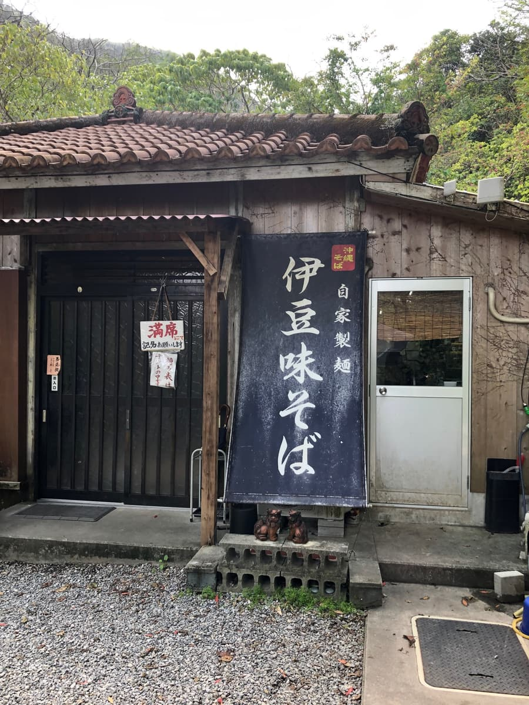
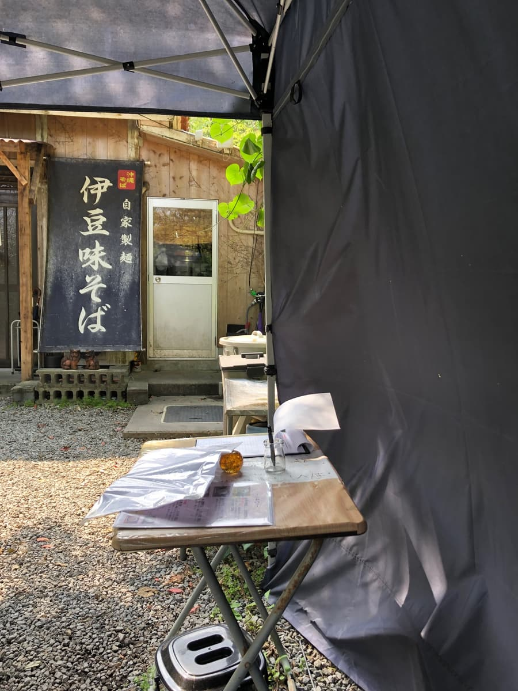
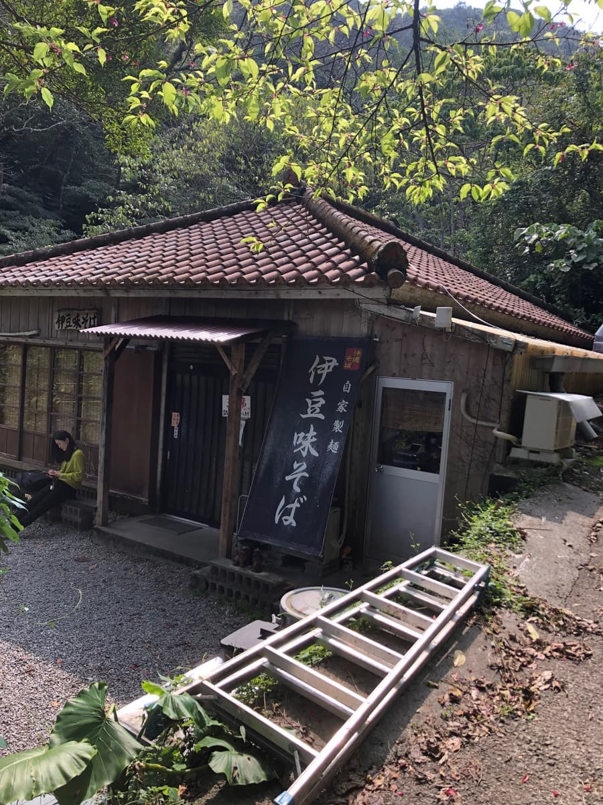
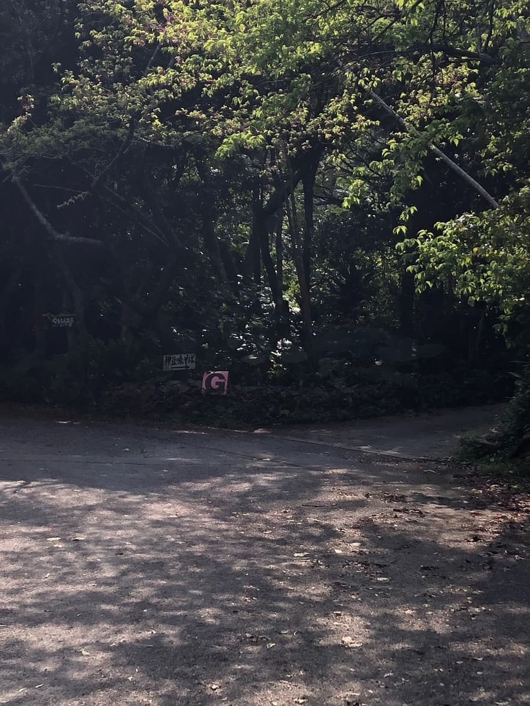
這家店就在前陣子吃過的「森之家」附近，同樣位在山中呢🌿 靠著導航沿著狹窄的道路前進，樹木環繞的地方孤零零地出現一棟古民家。紅瓦屋頂上鎮坐著風獅爺，寫著「自家製麵」、吸睛的大招牌迎接著我✨
到店後，入口掛著「客滿」的牌子…！果然是人氣店呢。外面架設了候位用的帳篷，是在那裡等候順位的方式。登記台上放著紙和筆，寫下名字等待叫號的感覺📝
這天等了相當久呢〜。有排隊也讓人期待值提高😆
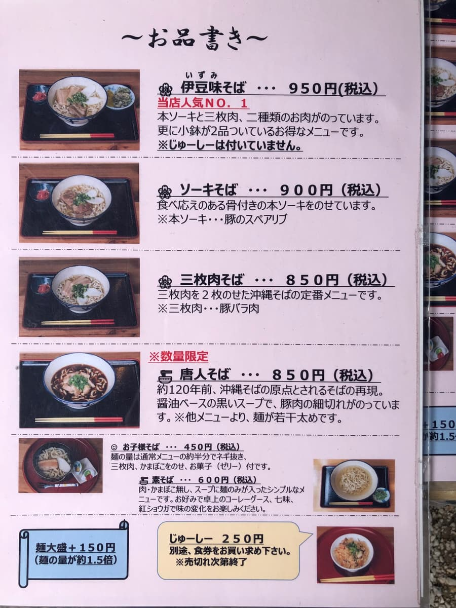
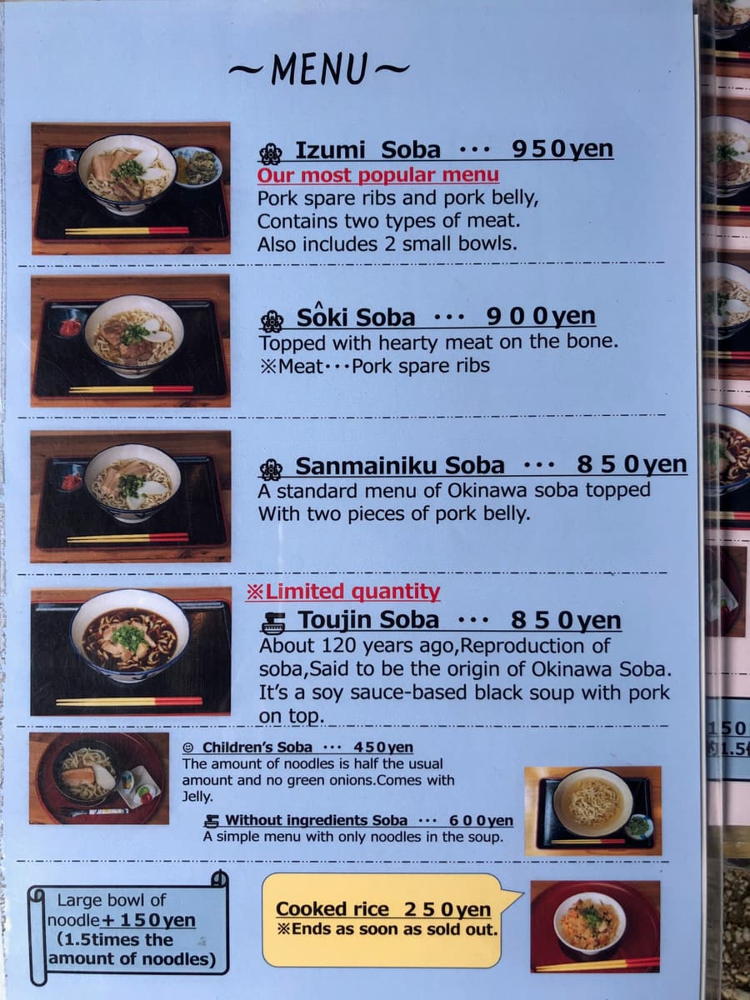
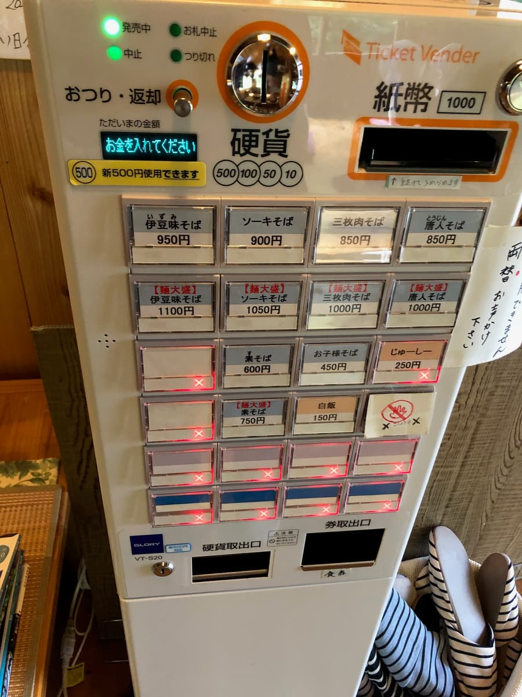
等了一陣子終於進到店內。一進去就有售票機，是在這裡購買餐券的形式。要脫鞋上去，能感受到木頭溫暖的店內嶄新又乾淨🏠 是古民家翻修的氛圍，天花板的梁柱外露，很有開放感。牆上還掛著「今日已售完」的牌子，似乎早早就會賣完。
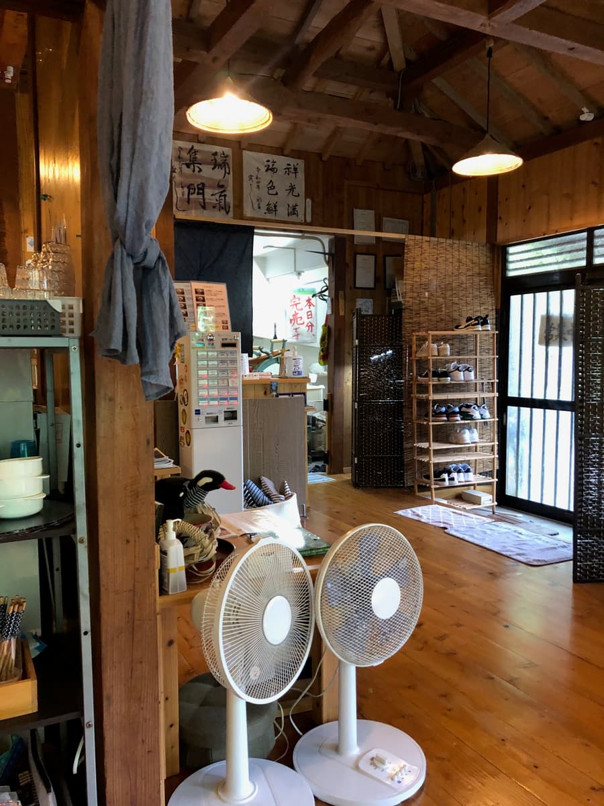
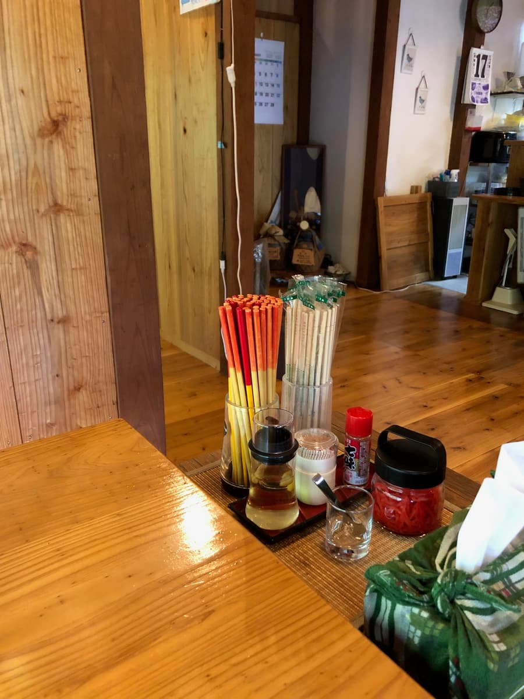
坐到位子上，窗外是長滿桫欏樹的綠意風景，真的有「正在山原森林裡用餐」的感覺🌴 氣氛超棒。
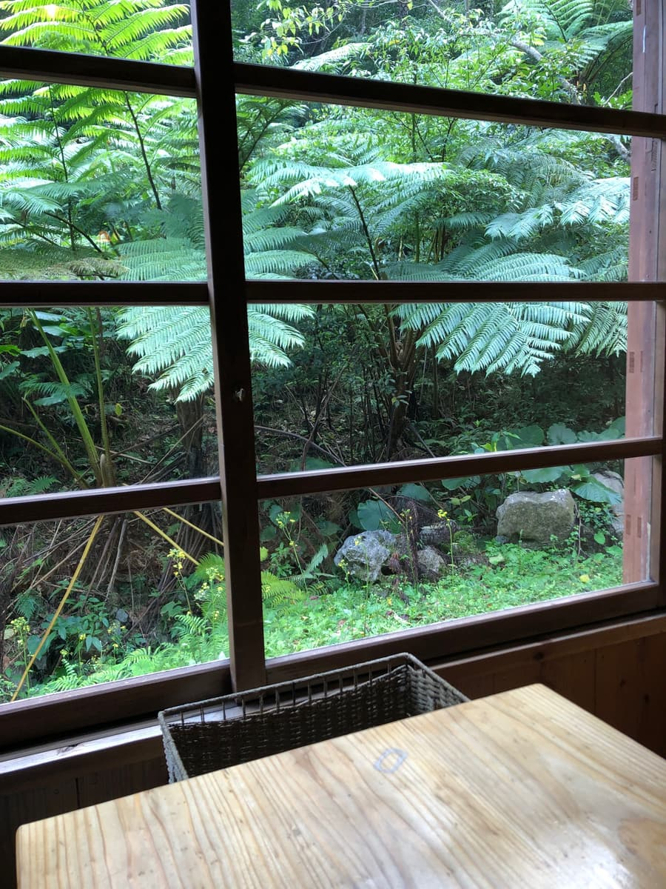
看菜單，寫著與店名同名的「伊豆味麵」是本店人氣第一。放了帶骨排骨和三層肉兩種肉，還附2樣小菜，是很划算的菜單。另外還有「排骨麵」「三層肉麵」，以及數量限定的「唐人麵」這種少見的菜單。唐人麵是再現約120年前沖繩麵原點的麵，據說是醬油基底的黑色湯頭🍜
這次當然就點與店名同名的「伊豆味麵」（950日圓）。
等了幾分鐘，放在托盤上的伊豆味麵端上來了！麵旁邊附有苦瓜醃菜和豆腐2樣小菜。光看外觀就充滿沖繩風情😊
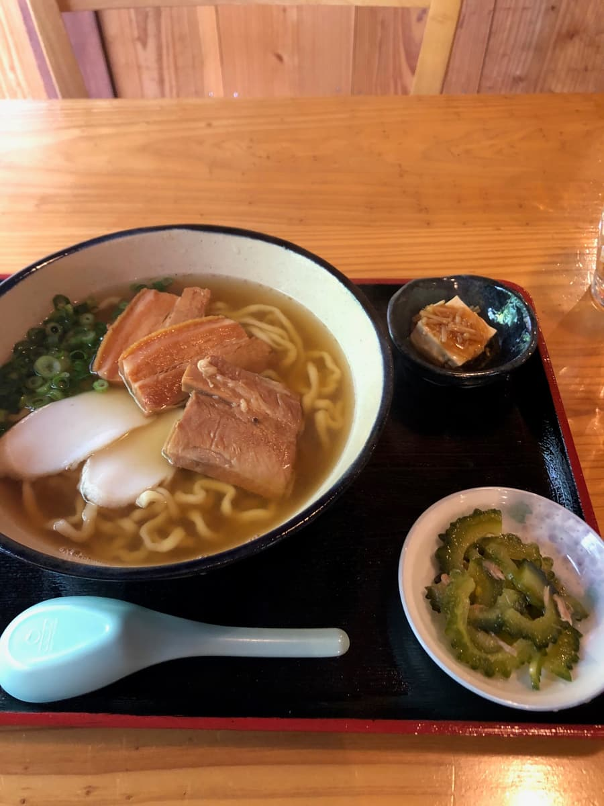
先照例喝湯。喝一口，是鰹魚高湯很夠味的溫和調味。
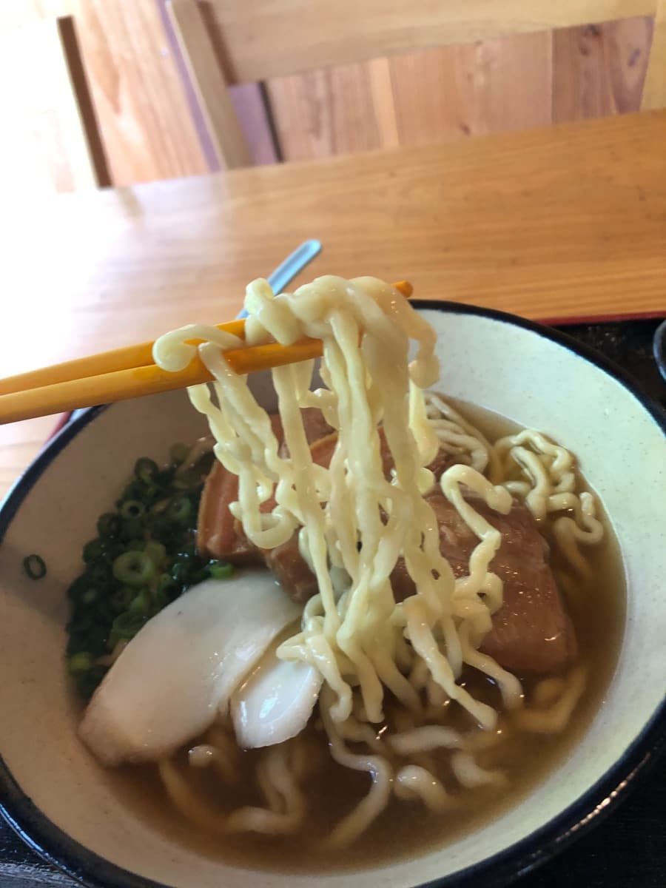
接著吃麵。因為是自家製麵所以很期待，是中粗的捲麵，很Q彈🍜 咬下去有紮實的彈性，跟湯頭的融合也不錯。這個麵相當好吃。
嚐嚐配料的帶骨排骨和三層肉。調味適中不差，但筋感相當明顯。要是燉得再軟一點就更開心了〜是這樣的印象。魚板和青蔥也確實有放。
小菜的苦瓜醃菜苦味很明顯，意外地好吃😋 很適合當作配菜轉換口味，跟麵也很搭。
評分（9.5分/15分）：整體的感想，因為有排隊也等了相當久，所以期待值提高了，但老實說有種還差一步的印象〜。位在山中的古民家，氣氛一流。自家製麵的Q彈感很好，但配料的筋感有點在意。是普通好吃的沖繩麵😊 古民家而店內嶄新乾淨，窗外的綠意景色超棒，毫無疑問是人氣店✨ 推薦給想一邊享受氛圍、一邊悠閒品嚐沖繩麵的人。
往本部町方向，尤其是去美麗海水族館或JUNGLIA沖繩的途中順道造訪也不錯。不過建議做好排隊的心理準備，早點去😄
麵：★★★✬☆（3.5）
湯頭：★★★☆☆（3）
配料：★★★☆☆（3）